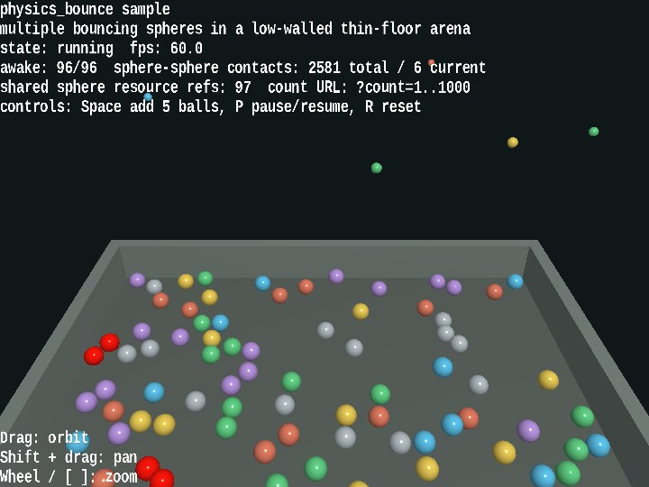

physics_bounce
English | 日本語

Overview
- This sample lets you inspect multiple spheres bouncing inside
PhysicsSpaceagainst the floor, walls, and one another - It uses
WebgAppto collect startup, HUD, input, and camera control while keeping the physics structure readable as a combination ofPhysicsNodeandCollider - The spheres are drawn as instance shapes that use a shared
ShapeResource, making it easy to confirm the structure "physics bodies are individual, render meshes are shared" even when increasing the count up to?count=1000 - The floor uses
PlaneCollider, the walls useBoxCollider, and the spheres useSphereCollider, so the differences between plane-sphere, sphere-sphere, and sphere-box bounce can be compared inside the same arena - Pressing
Spaceinjects additional spheres during runtime, making it possible to inspect not only single drops but also crowded rebound behavior
How to Run
- Open ./physics_bounce.html
- Use a browser with WebGPU support, and check the help panel and HUD together with the sample when needed
webg Features Used
WebgApp: initializesScreen,Shader,Space,Input, andMessagePhysicsSpace: manages gravity, fixed time steps, restitution, friction, and sleepPhysicsNode: places dynamic and static bodies and resets velocitiesSphereCollider,PlaneCollider,BoxCollider: build collision shapes for the spheres, floor, and wallsShapeandPrimitive: create the meshes for spheres, floor, and wallsEyeRig: handles the orbit camera and viewpoint control through pointer / keyboard input
Checkpoints
- Confirm that bounce height changes according to the restitution difference when spheres rebound from the floor
- Confirm that spheres flash red only at the moment of sphere-sphere contact and do not turn red for floor contact alone
- Confirm that the HUD displays the shared sphere resource reference count, making it visible that the sphere mesh remains shared even when the sphere count increases
- Confirm that moving the camera with drag,
Shift + Drag, or the mouse wheel still makes it easy to keep track of the rebound flow across the whole arena - Confirm that changing the sphere count with
?count=lets the same sample cover both lightweight checks and dense rebound observation
Controls
- Drag: orbit camera
Shift + Drag: pan- Mouse wheel /
[ / ]: zoom Space: add 5 spheresP: pause / resumeR: return the spheres to their initial state- Add a URL parameter such as
?count=240to change the initial sphere count
Implementation Details
- When you want to inspect restitution, friction, sphere-sphere contact, and sphere-box contact, this sample lets you read bounce height, red contact flashes, and reactions near the walls
shared sphere resource refsis a useful indicator for whether mesh sharing in rendering is still being preserved- Contract verification for
PhysicsSpaceitself is handled byunittest/physics_space_contracts, while this sample focuses on visible behavior and interaction